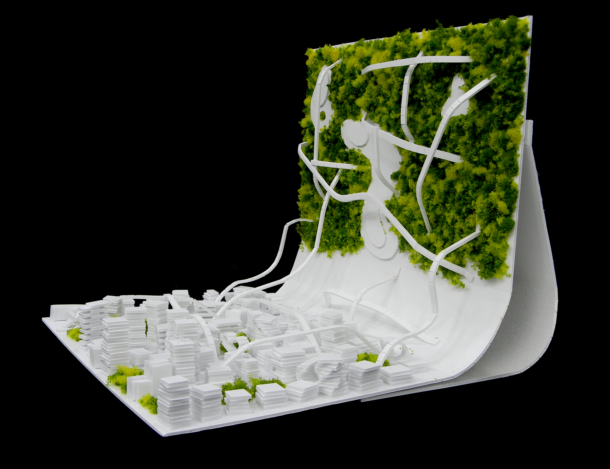
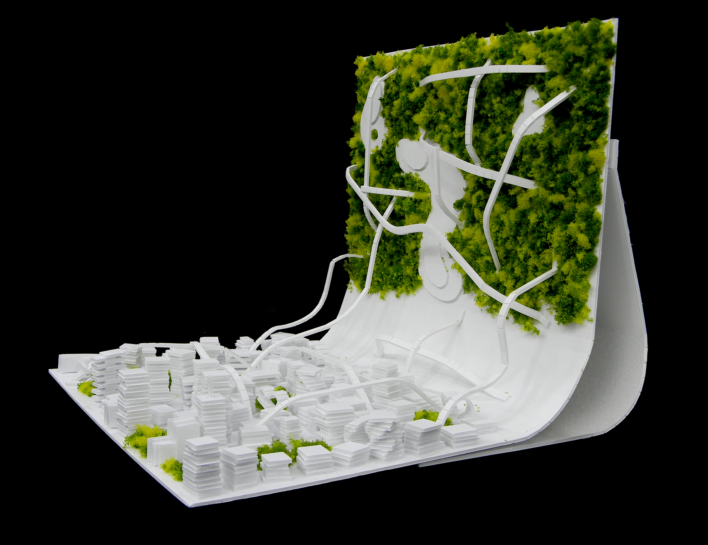
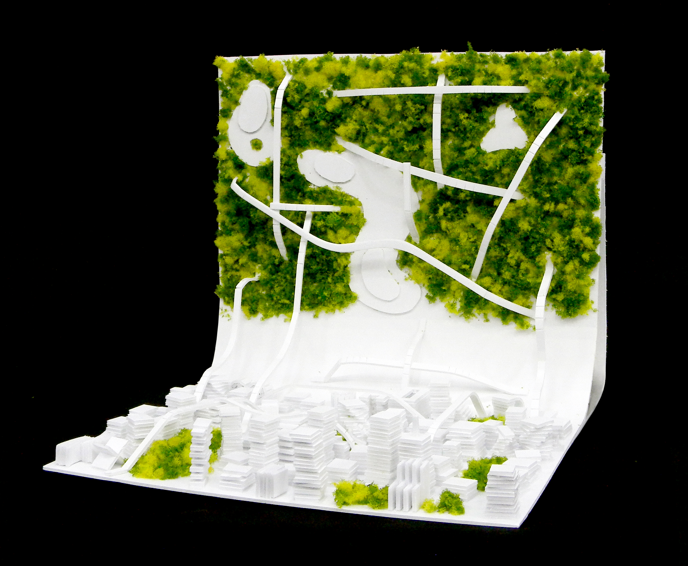
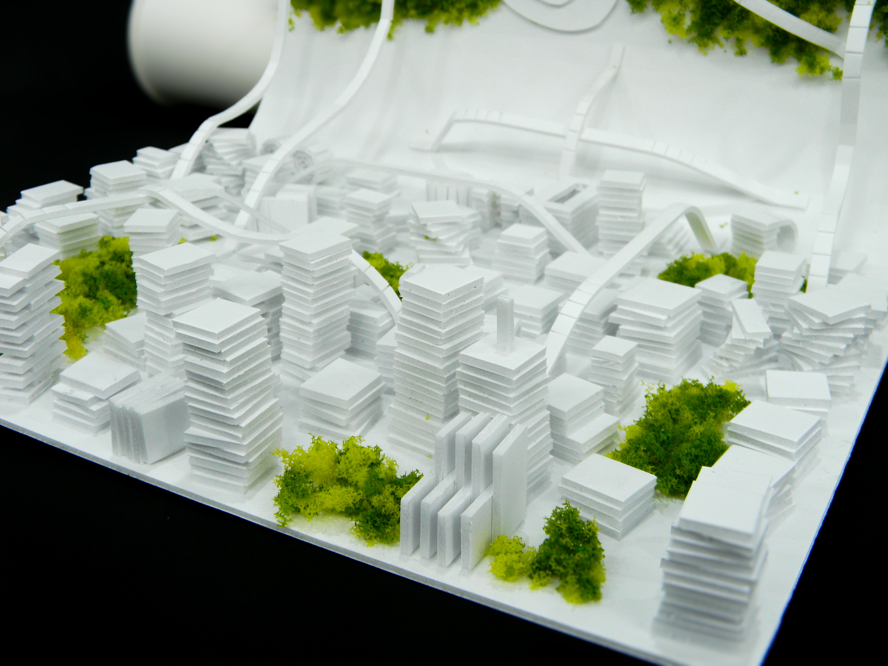
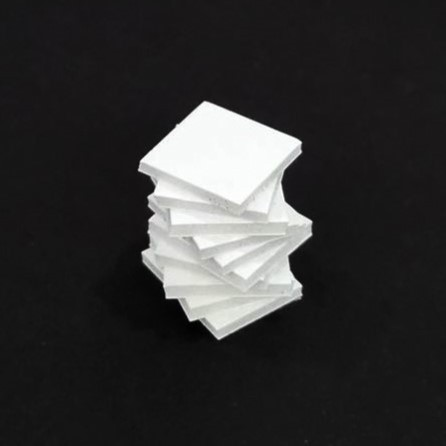
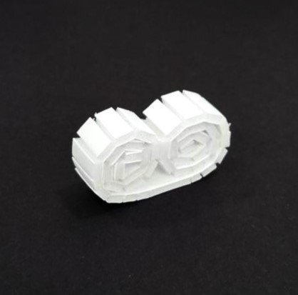
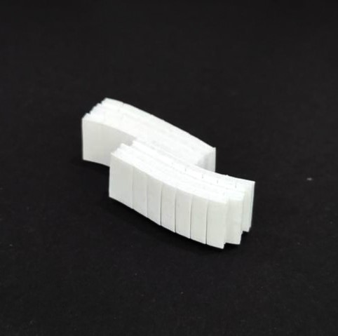
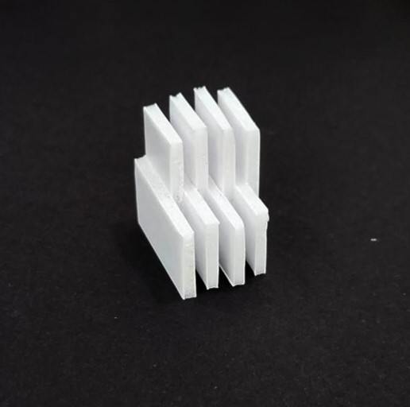

Astrograssy
Nov 26, 2023
Astrograssy is a human-made conceptual city inspired by the movie 'Interstellar’. Urban sprawl is a traditional solution for expanding cities and overflowing populations, yet it has its problems; it demands a vast amount of land and thus, leads to the loss of agricultural and natural lands and habitats. To address this problem, I reorganized a conventional city by separating the green belt and the urban area. The building area is a mosaic of a business and residence zone. I also added overpass highways above the city for better, streamlined traffic. Now transportation travels above the surface or underground, ensuring safety for pedestrians.
 






